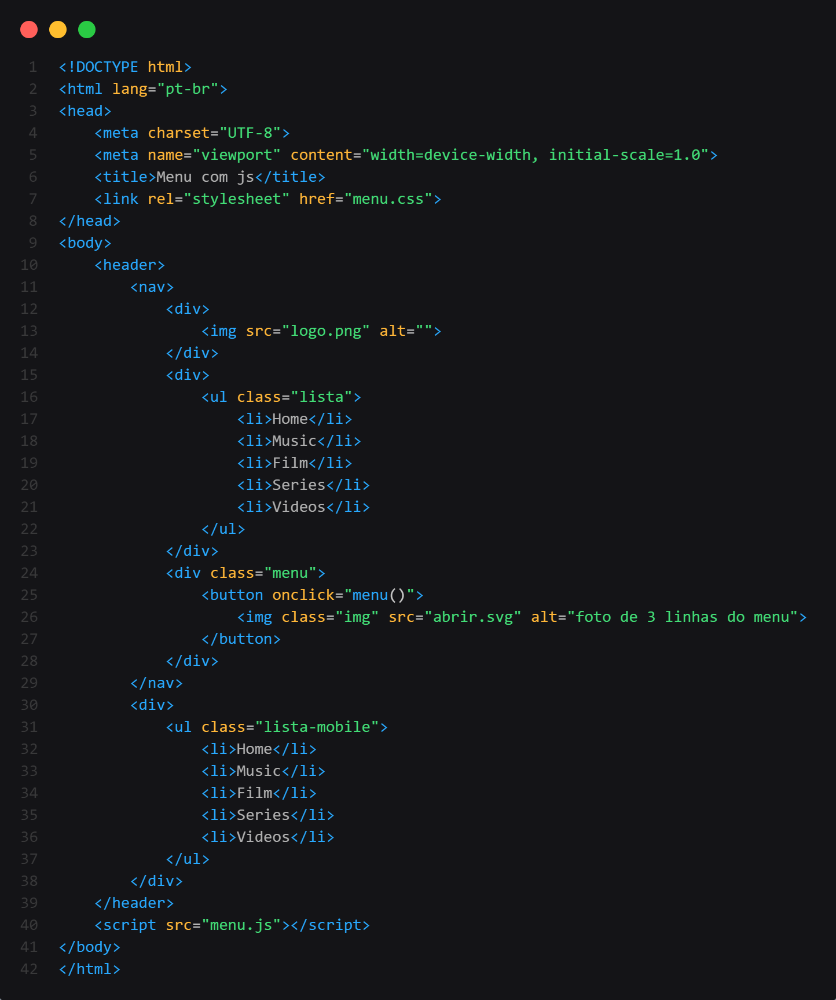
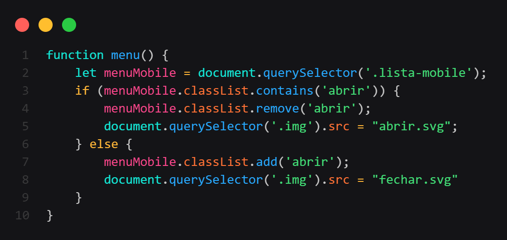

Primeiro criei o corpo padrão do HTML, fiz duas listas iguais dentro do header, a primeira fica com o Display:Block, e a segunda com Display:None, pois a segunda só irá aparecer com o width de 550px, fiz as Classes e Id's com nomes fáceis para todos entenderem.
Criei as estilizações para o header ficar no centro, com limite até onde aumentar, e padding para o conteúdo dentro não ficarem pegando nas bordas do header.
Ajustei cada lista para seu display, organizei os locais e o visual dos botões, e criei a responsividade para quando o width estiver com 550px, as listas irem para suas configurações.
Criei uma classe dentro da responsividade de 550px chamada abrir, ela é importante para que o JavaScript, onde veremos a seguir.
Criei uma função como podem ver no HTML, chamada menu(), ao clicar(onclick) no menu lateral(hambúrguer), a classe abrir mostrasse a segunda lista que ocultamos e trocasse a imagem para um X, e ao clicar novamente no X toda alteração é desfeita, fazendo com que a lista desaparecesse e voltasse a imagem do menu lateral(hambúrguer).
